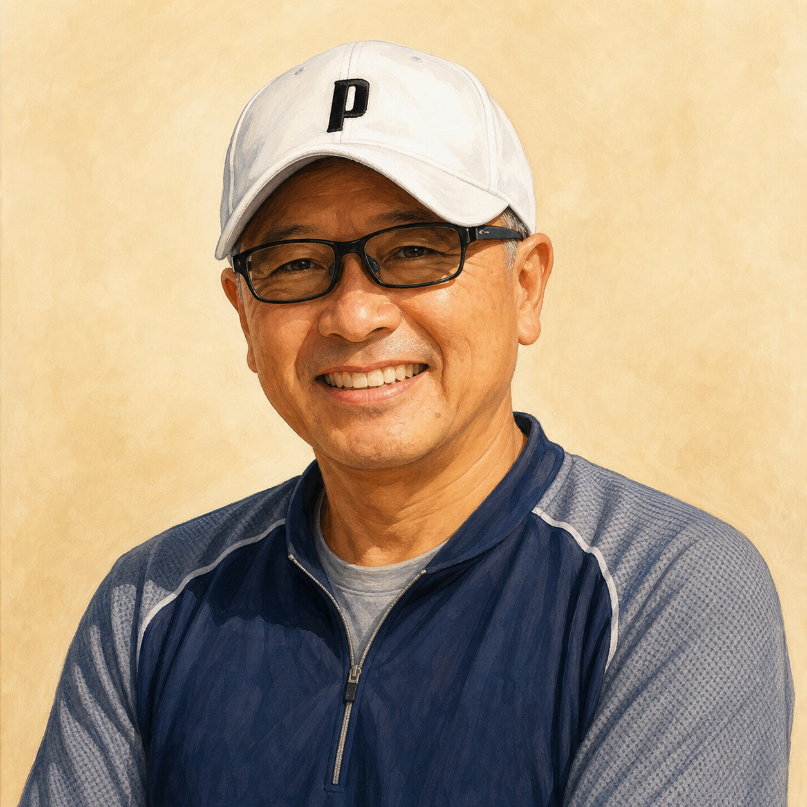
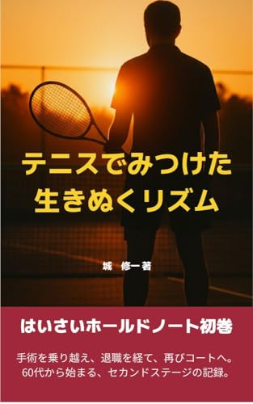
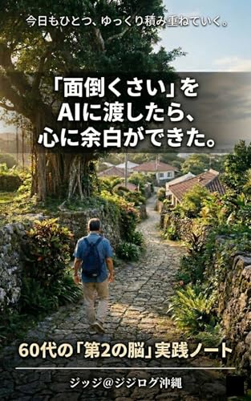

Tennis Coaching
感覚を言葉にして、長く続けられるテニスへ
ジュニアからシニアまで、年齢や体力に合わせて「無理なく上達する道筋」を一緒に作ります。フォームだけを直すのではなく、試合中の判断、緊張した場面での呼吸、怪我を避ける身体の使い方まで、現場で使える言葉にして伝えます。
- ジュニア育成、試合前の整理、親御さんへの方針共有
- シニア世代の再スタート、怪我をしにくいプレースタイル作り
- 審判資格と競技経験を活かした、ルールと戦術の言語化
「もう遅い」を超えていく。
心臓手術からの復帰経験をもとに、50代以降の“人生更新”を支援しています。
テニス指導、AI活用、情報発信を通じて、
身体・知性・心のリズムを整える伴走をしています。

テニス指導歴は数十年に及び、長年現場で技術と理論を磨いてきました。審判資格を持ち、ルールの専門性を追求することで、ただの感覚論ではない「言語化されたテニス」を教えています。
2022年、私は心臓の大手術を経験しました。一時はコートから遠ざかりましたが、その制約や故障を「新たなプレースタイル（脱力と効率）を深化させるための相棒」と捉え直し、復活を遂げました。この経験から、「年齢を理由に諦めない再スタート」の大切さを強く実感しています。
現在は、テニスを「人生のリズムを整える技術」として次世代のジュニアやシニアへ伝えるとともに、AIという新しい道具をかつての「マイコン少年」のようなワクワク感で面白がりながら、日々のライフデザインや仕事の効率化に取り入れています。
「言葉にできた分だけ、前に進む。失敗や病気すらも、今の自分を作る大切な『編集素材』です。」
テニス、AI、首里での暮らし。 日々の小さな実践を積み重ねながら、人生更新のヒントを発信しています。
身体（テニス）、精神（執筆）、知性（AI）を循環させ、健やかに生きるためのアプローチ。
確かな指導ライセンスと審判資格に裏打ちされた理論をもとに、感覚を「操作説明書」のように言語化。ジュニアの育成からシニアの怪我をしない生涯テニスまで、戦術的な指導を行います。
Note「ジッジ沖縄」や週刊Substackニュースレターを通じて、シニア向けの生き方や再スタートのヒントを発信。人生の「編集者兼伴走者」として、読者の心のリズムを整えるエッセイを届けます。
シニア世代や小規模事業者向けに、AIを使った文章作成、情報整理、日常業務の効率化を支援しています。「難しい技術」ではなく、日常で使える“相棒”として、AIを楽しく取り入れる方法を発信しています。
Tennis Coaching
ジュニアからシニアまで、年齢や体力に合わせて「無理なく上達する道筋」を一緒に作ります。フォームだけを直すのではなく、試合中の判断、緊張した場面での呼吸、怪我を避ける身体の使い方まで、現場で使える言葉にして伝えます。
Writing & Life Design
病気、退職、再挑戦、首里での暮らし。日々の出来事をただの記録で終わらせず、読者が自分の人生を少し見直せる文章として届けています。Noteでは身近な実践を、Substackでは少し深い人生更新のエッセイを育てています。
AI Partner
AIを難しい専門技術としてではなく、日々の文章作成、情報整理、予定確認、発信準備を助けてくれる「暮らしの道具」として使っています。シニア世代や小さな事業者が、自分のペースでAIを取り入れられるよう、実体験をもとに支援します。
テニス、AI、そして人生再設計。私のこれまでの実践と気づきを体系化した書籍です。

テニス指導歴数十年の知見と、沖縄・首里での穏やかな日常の中で見つけた、人生後半を軽やかに生きるためのヒントを綴ったエッセイ集。
Amazonで詳細を見る
AIを「難しい最新技術」としてではなく、かつてのマイコン少年のように面白がりながら、日々の面倒な事務作業をAIに委任し、創造的な余白を作り出すための実践的ライフデザイン書。
Amazonで詳細を見る日々の気づきを綴るNoteと、より深く繋がるための週刊ニュースレター。
毎週お届けする、伴走感のある「人生更新エッセイ」。シニア向けのAIライフでの失敗談、身体との付き合い方、心が震える「ぬちぐすい（命の薬）」の体験などを共有する母艦メディアです。
テニスの個別指導、
シニア向けAI活用、
執筆・発信相談など、
お気軽にご相談ください。
初回相談は無料です。
雑談レベルでも大丈夫です。